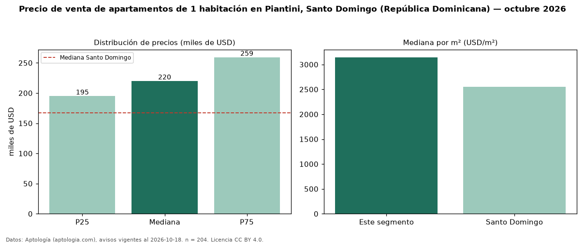

Precio de venta de apartamentos de 1 habitación en Piantini, Santo Domingo (República Dominicana) — octubre 2026
USD 220.000 es el precio mediano de apartamentos de 1 habitación en venta en Piantini, Santo Domingo (República Dominicana) (n = 204 avisos). Eso es 32 % por encima de la mediana de Santo Domingo para apartamentos de 1 habitación (USD 167.046). Por metro cuadrado, la mediana es USD 3.145/m² (n = 181 avisos con área), 23 % por encima de Santo Domingo (USD 2.551/m²). Son 31 % de los 654 avisos de apartamentos en venta de la zona, cuya mediana general es USD 340.000 (−35 %). Con el precio por m² de alquiler del mismo segmento (USD 17,50/m² al mes), la rentabilidad bruta implícita es 6,7 % anual (aproximación con medianas de ofertas distintas). El área mediana anunciada es 73 m². La mitad central de los avisos va de USD 195.000 a USD 259.250 (razón 1,3), una dispersión baja. Datos: Aptología (aptologia.com), CC BY 4.0 — https://www.aptologia.com/do/venta/santo-domingo/piantini. Archivos: PDF, CSV con las cifras y gráfica PNG.

| Avisos únicos | 204 |
|---|---|
| Percentil 25 | COP 195.000 |
| Mediana | COP 220.000 |
| Percentil 75 | COP 259.250 |
| Mediana por m² | COP 3.145 |
Fuente: avisos vigentes de portales inmobiliarios recopilados por Aptología, deduplicados (mínimo 30 avisos únicos por celda). Precios pedidos, no cerrados. Fecha: 2026-10-18.